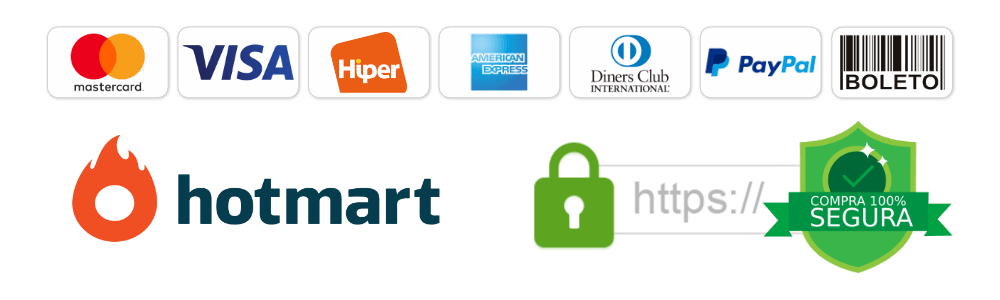

Transforme seu corpo e sua saúde com a Dieta cetogênica
Ebook com 150 receitas ideais para perder peso e melhorar sua saúde. Ensinamos que você pode comer muito bem, mesmo com restrição de carboidratos, através de receitas fáceis, sem precisar parar de comer.
Quero baixar o ebook
Perda de peso
A dieta cetogênica pode ajudar a promover a perda de peso, pois limita o consumo de carboidratos e aumenta o consumo de gordura, o que pode levar a uma redução no apetite e na ingestão calórica.
Controle do açúcar no sangue
Ajuda a controlar os níveis de açúcar no sangue, pois reduz a ingestão de carboidratos simples, o que pode ajudar a estabilizar os níveis de açúcar no sangue.
Melhora do controle do apetite
Melhora no controle do apetite, pois a gordura é uma fonte de energia mais saciante do que os carboidratos, o que pode ajudar a evitar a fome excessiva.
Melhora da saúde metabólica
Reduz os níveis de triglicerídeos, colesterol e pressão arterial, e também pode melhorar a sensibilidade à insulina e em alguns casos, episódios compulsivos
Desfrute de receitas deliciosas e saudáveis. Todas com baixa quantidade de carboidratos
Para facilitar o seu dia a dia e o uso do ebook, dividimos as receitas em:
Esquenta
Decidimos colocar nessa parte algumas receitinhas e dicas para o reaproveitamento de ingredientes, sejam eles cascas, talos, etc… partes que geralmente descartamos. Além disso, dicas de aromáticos, molhos, cremes e preparações base! Tudo explicado e fácil, para ficar do seu jeito, facilitando ao deixar as preparações mais saborosas e agradáveis!
Café da manhã e Snacks
Consiste na nossa deliciosa seleção de receitas cetogênicas para o café da manhã e também alguns lanchinhos. As receitas incluídas neste tópico foram selecionadas com bastante cuidado, justamente para ajudar a iniciar o seu dia com energia e manter a sua saciedade sob controle. Além disso, essas receitas incluem ingredientes nutritivos, ricos em gordura e proteínas, que ajudam a promover a perda de peso e melhorar a saúde metabólica, dois benefícios importantes da dieta cetogênica!
Refeições principais
Uma extensa variedade de receitas cetogênicas para o almoço e jantar que irão te impressionar com a qualidade e sabor das mesmas! São receitas dos mais variados tipos e estilos, para agradar todos os paladares…deliciosas e nutritivas, cuidadosamente selecionadas para ajudar a equilibrar seus níveis de nutrientes e melhorar sua saúde metabólica. Além disso, essas receitas vão ajudar a manter sua saciedade e controlar sua fome, ajudando na perda de peso, três benefícios importantes da dieta cetogênica.
Doces e sobremesas
Uma seleção incrível de doces e sobremesas cetogênicas! Ajudar a satisfazer o desejo por doces sem comprometer a dieta cetogênica é um importante fundamento no qual nos conectamos. Uma série de receitas conhecidas, alteradas para se encaixarem na linha cetogênica, evitando assim consumir sempre as mesmas coisas devido às restrições implicadas. Com essas receitas você pode comer doces sem medo de sair da dieta.
A chave para um metabolismo otimizado em queimar gordura
Quero a minha cópia!Quem somos nós

Nutricionista formado pela universidade São Camilo, pós graduado pela VP Consultoria em Nutrição funcional e em Genômica Nutricional.
Desde pequeno sempre foi autodidata, vive em uma eterna busca pelo conhecimento onde é apaixonado por uma nutrição integrativa, olhando o ser humano com todo.
Já atendeu em seu consultório mais de 5.000 pacientes e conta com mais de 180 mil seguidores nas suas redes sociais, onde diariamente compartilha suas experiências e conteúdos riquíssimos com uma didática e humor ímpar.
Além disso, ama café, vinho e tem um Pug chamado Hulk.
Chef de cozinha, consultor gastronômico de A&B e docente de gastronomia.
Apaixonado desde sempre pelos alimentos, suas misturas, texturas, aromas, sabores e cores. Experiência em restaurantes Michelin no Brasil e na Itália. Premiado pelo 'Il Golosario' e pelo 'Guida Espresso' com 6 meses de abertura e comando de restaurante em Lecco (Itália).
Especialização em comida italiana, pós graduado em gestão de negócios de A&B e em docência no ensino superior. Pós graduando em nutrição esportiva.
Veja alguns exemplos de receitas que estarão disponíveis para você
Receitas fáceis e saudáveis para o seu dia a dia
Ovos recheados do nosso jeito
Quase X bacon keto style
"Arroz" carreteiro
Xcake
E MAIS...
Nesse ebook você também terá sugestões de utensílios e de alimentos e nossas marcas favoritas, além de um guia de temperaturas para você preparar suas receitas de um jeito fácil.
O que nossos clientes falam sobre nós!
ATENÇÃO: DISPONIBILIZAMOS POUCAS CÓPIAS COM O PREÇO DE LANÇAMENTO
Aproveite e garanta a sua cópia com preço promocional
Perda de peso
Controle do açúcar no sangue
Melhora do controle do apetite
Melhora da saúde metabólica
Queima de gordura potencializada
Aumento das concentrações de corpos cetônicos
De R$ 99,00 por apenas
R$ 59,99
ou em 8X R$ 8,51 NO CARTÃO DE CRÉDITO
Comprando no cartão de crédito ou pix o ebook é enviado na hora!
OFERTA ESPECIAL
COMPRE O EBOOK DE RECEITAS CETOGÊNICAS E LEVE UM EBOOK ADICIONAL COM 127 RECEITAS
COMPR 1 E LEVE O OUTRO
POR APENAS
12x de R$8,98 no cartão de crédito
*Acesso Imediato Comprando no Cartão ou Pix, Boleto Leva 24 Horas
Dúvidas frequentes
Do que se trata esse ebook?
O Ebook “150 receitas cetogênicas” é um livro com 150 receitas dividas em receitas contra o desperdício, café da manhã e lanches, refeições principais e doces. Além disso, conta com um guia de utensílios, sugestões de marcas e dicas do Nutri e do Chef nas receitas.
Para quem é indicado?
A dieta cetogênica é geralmente indicada para pessoas que desejam perder peso e melhorar a saúde metabólica. Ela pode ser especialmente útil para as pessoas que têm diabetes tipo 2, obesidade, síndrome metabólica, doença cardiovascular e alguns tipos de câncer. Além disso, a dieta cetogênica pode ser uma opção para pessoas com epilepsia que não respondem a medicamentos anticonvulsivos.
Quando receberei o ebook?
Você recebe o ebook por email imediatamente após aprovação da compra. No cartão de crédito ou pix a liberação é imediata. No boleto bancário pode levar até 3 dias úteis
Quanto tempo tenho de garantia?
Você tem 7 dias para pedir reembolso. Se você comprar e não gostar das receitas pode pedir o seu dinheiro de volta sem nenhum problema, mas acredite, você irá amar.
Quais as formas de pagamento?
Você pode adquirir o seu ebook via pix, cartão de crédito ou boleto bancário.
Por onde posso esclarecer as dúvidas?
Você pode esclarecer todas as dúvidas pelo WhatsApp no nosso pós venda: 11 94777-6320. Mas sem timidez, não deixe de enviar suas dúvidas por direct no nosso Instagram e não se esqueça de nos marcar nas receitas.
Este site não é afiliado ao Facebook ou a qualquer entidade do Facebook. Depois que você sair do Facebook, a responsabilidade não é deles e sim do nosso site. Fazemos todos os esforços para indicar claramente e mostrar todas as provas do produto e usamos resultados reais. Nós não vendemos o seu e-mail ou qualquer informação para terceiros. Jamais fazemos nenhum tipo de spam. Se você tiver alguma dúvida, sinta-se à vontade para usar o link de contato e falar conosco em horário comercial de Segunda a Sextas das 09h00 ás 18h00. Lemos e respondemos todas as mensagens por ordem de chegada.